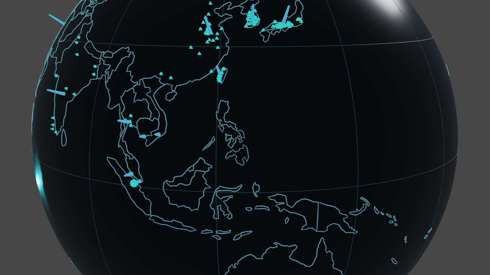

›
Distribution mappable installations
Top countries click to inspect
Timeline catalogue records by year SAR observability harmonized 20 m grid NISAR L · co-pol MD95 25 m
Sentinel-1 C · co-pol MD95 30 m
Initial bounds, not a universal mission ranking.
Blender scene WGS84 · 360 frames 
Editable `.blend` + animated GLB; event semantics are embedded as metadata.
×
CATALOGUE RECORD
FPV record
LIVE EO LOOKUP Sentinel-2 L2A Nearest scene to Fetch
Select a geolocated record to query current EO metadata.
10 m true-colour crop appears here
Nearest available acquisition—not a real-time camera and not evidence of motion by itself.
CONTROLLED MOTION LAB
Interrogate the detector
Sensor NISAR L Sentinel-1 C
Synthetic translation 40 m Direction East · 0° North-east · 45° North · 90° North-west · 135° West · 180° South-west · 225° South · 270° South-east · 315° Recovery probability — —
Site MD50 / 80 / 95 — —
Replay validated Tengeh 40 m test
— —
â–¶ Animate evidence registered change
Fetch nearest optical scene to event Open full georeferenced raster evidence → A documented calamity does not guarantee recoverable rigid translation. Localized structural change and below-threshold motion remain valid outcomes.
Ⅱ ⌂
GLOBAL INVENTORY 643 installations surveyed through April 2023; not a live global census. Nobre et al. · DOI 10.1016/j.solener.2023.112244 × REMOTE-SENSING RESEARCH EXPLORER
FPV EarthObservatory Explore a 643-record floating-photovoltaic survey, interrogate calibrated L/C-band displacement limits, and inspect documented calamity evidence without confusing synthetic motion with real drift.
643 catalogued
517 mapped
807,840 SAR trials
Enter the observatory Survey snapshot through April 2023. The live EO panel queries the nearest available Sentinel-2 acquisition on demand.